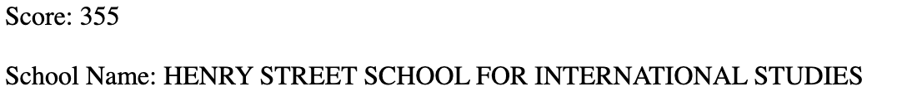

This is a project that includes API from NYC Open Data. My group and I chose to make a project called SAT Breakdowns(to breakdown the list of high schools that had that score in the SAT and actual mental breakdowns), where the user first sees an alert that introduces the project, which will then ask what SAT score they would like to see from the section they select for (critical reading, writing, and math). The project will then bring up all the high schools that had in that range of scores in the desired section.
There were challenges and struggles along the way. Starting with personal struggles, the group and I were all busy throughout the week, filled with after class programs and schdeules, so there was a lack of communication. However, we did manage to push through and finish the code! Moving onto technical issues, we did have many errors, espeically when it came to showing the end result, using the databases and API's. These errors either took us 1 minute to fix or hours, yet we were able to find the reason behind those bugs.
This project taught me many important lessons moving on to the future projects. I learned how to work with an API, which was an interesting experience on its own, and I'm looking forward to seeing the potential that I will have on the future projects. I hope to do something more with the APIs we have learned, and make something even bigger with it, using the information we learned now and the future information we will learn. Besides the SEP and JS portion of the project, this project also taught me how to handle situations where it can be nerve-racking, for example, group projects. Group projects can be hard to cooperate and connect with one another, yet it only teaches you for the better.
Preview
Github
